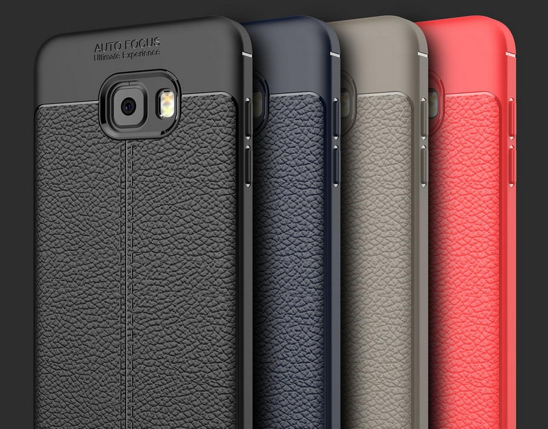
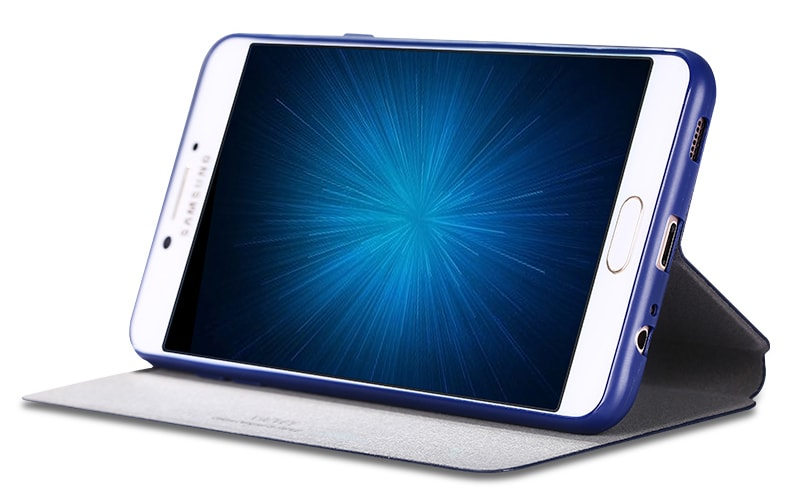
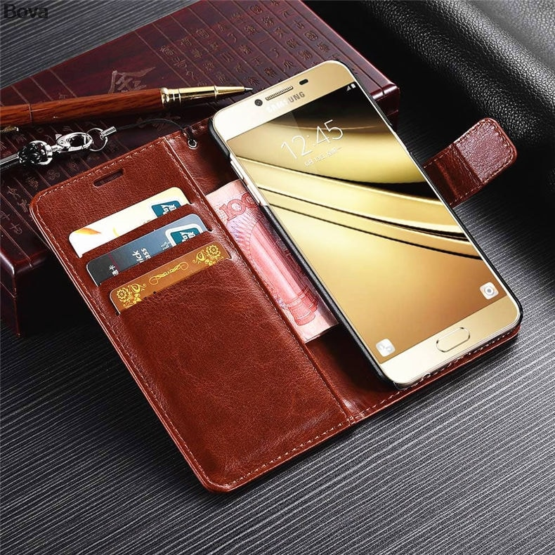

Чехлы и защитные стекла для Вашего телефона
Samsung Galaxy C5 Pro





Приобретая новый телефон , каждый задумывается о том, как оградить его от повреждений. Хорошим решением будет покупка чехла и защитного стекла. На нашем сайте можно выбрать чехол и пленку для Samsung Galaxy C5 Pro.
Для того, чтобы защитить Ваш смартфон от внешних воздействий и неприятных неожиданностей, а также дополнить Ваш образ стильным аксессуаром, существует огромное количество разнообразных чехлов и защитных экранов.